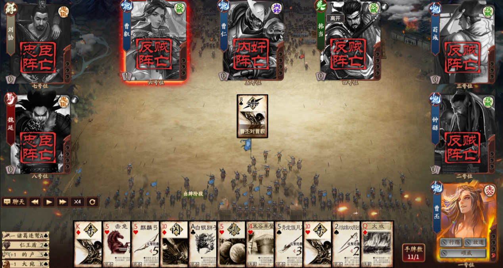
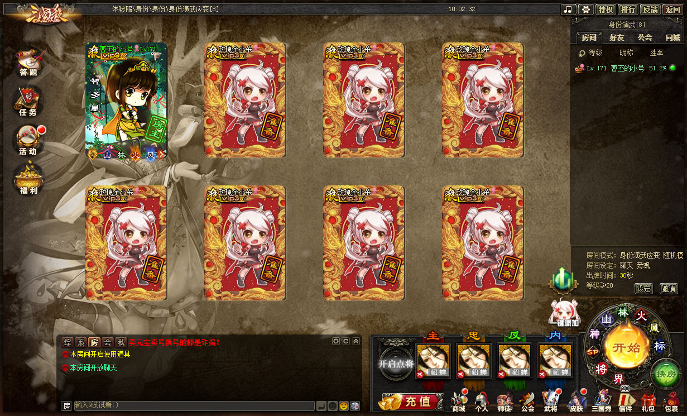
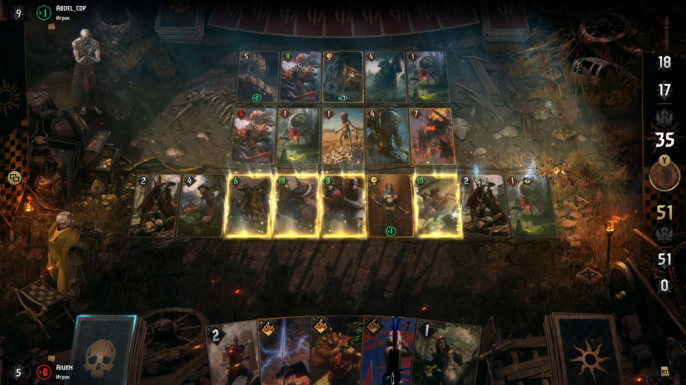

NGHIÊN CỨU THIẾT KẾ · 16/09/2026 · PC/LAPTOP TRƯỚC
Trận đồ dưới chiến kỳ
Chân dung tướng và thẻ lệnh làm trọng tâm. Chiến địa tạo chiều sâu ở rìa; vùng giữa dành cho diễn biến nước đi. Đại ấn chỉ xuất hiện ở khoảnh khắc lớn.
Những dẫn chứng đã xem trực tiếp
Ảnh dưới là sản phẩm tham khảo của nhà phát hành, có niên đại riêng. Sơ đồ bên dưới là đề xuất hình học của chúng ta, chưa phải giao diện game đã triển khai hoặc bản hi-fi được duyệt.

Tam Quốc Sát — trận đấu trong bài sự kiện 2019. Chân dung chữ nhật, cờ tên/phe, dấu tử trận tại ghế; vùng giữa nhường cho lá phân giải. Ảnh có điều khiển phát lại, không chứng minh timing live. Nguồn chính thức.

Tam Quốc Sát OL — phòng chờ 2021. Học bảng ghế và cột luật độc lập; Room của chúng ta tập trung vào vào trận và cấu hình, không thêm các cụm thương mại ngoài phạm vi. Nguồn chính thức.

GWENT — gallery chính thức, không ghi ngày ảnh. Học cách phân lớp khung cảnh và lá bài. Không dùng bố cục hai người để thay bàn thân phận nhiều người. Nguồn chính thức.
QSanguosha
Đối chiếu C++/Qt: chọn bài, sắp xếp, đường đích và phân loại animation.
LangKhach
Đối chiếu bản phân phối Windows: họ frame/nút, skin và giới hạn độ nét.
3qs
Đối chiếu web flow, prompt và dữ liệu riêng tư. Nhiều asset trùng hai kho còn lại.
Bố cục 4–10 người: kiểm khung hình học
Tọa độ tính theo CSS viewport. Đây là sơ đồ mật độ thông tin, không phải đề xuất dùng các khối xám làm mỹ thuật cuối. Chọn 100% để xem đúng kích thước chữ/lá; kéo thanh cuộn trong tay bài để xem đủ 20 lá.
Khung vừa không đồng nghĩa đã nghiệm thu UI: vẫn cần ảnh hi-fi với tên dài, đầy trang bị/phán xét, các prompt thực tế và kiểm chạm trên tablet. Màu phe, chọn đích, role và người có lượt có bốn vị trí/ý nghĩa riêng.
Những thay đổi cốt lõi so với v2
Bỏ đại ấn thường trực; sửa layout ghế chồng tay bài; lấy cuộn ngang làm mặc định cho tay bài đông; đưa session, privacy và event contract lên trước combat polish. Tách Sát được Né khỏi Sát gây damage, và tách hấp hối khỏi tử trận/lộ thân phận.